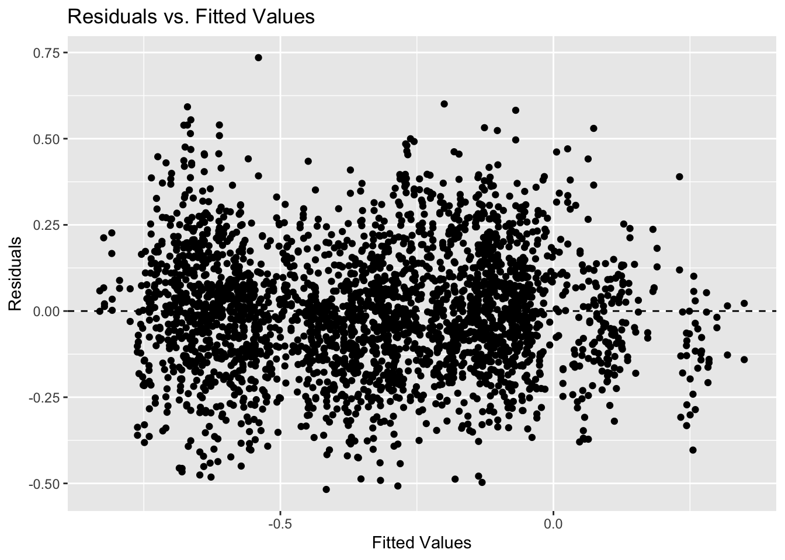

Call:
lm(formula = mn_score_all ~ perecd + povertyall + unempall +
lninc50all + baplusall + perblk + perasn + perwht, data = selected_variables_MA,
weights = weights)
Weighted Residuals:
Min 1Q Median 3Q Max
-2.5187 -0.3788 -0.0423 0.3591 3.8483
Coefficients:
Estimate Std. Error t value Pr(>|t|)
(Intercept) 0.74363 0.22682 3.279 0.00105 **
perecd -0.83297 0.03873 -21.506 < 2e-16 ***
povertyall -0.75291 0.12242 -6.150 8.36e-10 ***
unempall 2.16004 0.13713 15.752 < 2e-16 ***
lninc50all -0.06063 0.01899 -3.192 0.00142 **
baplusall 0.92817 0.02638 35.191 < 2e-16 ***
perblk -0.15714 0.06596 -2.382 0.01724 *
perasn 0.93507 0.06239 14.987 < 2e-16 ***
perwht 0.12889 0.04194 3.073 0.00213 **
---
Signif. codes: 0 '***' 0.001 '**' 0.01 '*' 0.05 '.' 0.1 ' ' 1
Residual standard error: 0.634 on 4766 degrees of freedom
Multiple R-squared: 0.7659, Adjusted R-squared: 0.7655
F-statistic: 1949 on 8 and 4766 DF, p-value: < 2.2e-16Final exploratory modeling
Weighted Regression Model
Massachusetts Weighted Regression Model
Interpretation for MA Weighted Regression Model
| Term | Coefficient Estimate | Interpretation |
|---|---|---|
| Intercept | 0.74363 | Baseline mean score for all students, when all predictors are at zero. |
| perecd | -0.83297 | For each percentage point increase in economically disadvantaged students, there is an expected decrease of approximately 0.833 in the mean score. |
| povertyall | -0.75291 | For each percentage point increase in poverty rate, there is an expected decrease of approximately 0.753 in the mean score. |
| unempall | 2.16004 | For each percentage point increase in unemployment rate, there is an unexpected increase of approximately 2.160 in the mean score. |
| lninc50all | -0.06063 | A 1% increase in median income is associated with a decrease of 0.061 in the mean score, indicating a complex relationship with other socioeconomic factors. |
| baplusall | 0.92817 | For each percentage point increase in the percentage of parents with a bachelor’s degree or higher, there is an expected increase of approximately 0.928 in the mean score. |
| perblk | -0.15714 | For each percentage point increase in the percentage of Black students, there is an expected decrease of approximately 0.157 in the mean score. |
| perasn | 0.93507 | For each percentage point increase in the percentage of Asian students, there is an expected increase of approximately 0.935 in the mean score. |
| perwht | 0.12889 | For each percentage point increase in the percentage of White students, there is an expected but smaller increase of approximately 0.129 in the mean score. |
| R-squared | 0.76590 | The model explains approximately 76.59% of the variance in the mean score for all students in the dataset. |
MA Weighted Regression Model Residual Plots
`geom_smooth()` using formula = 'y ~ x'Mississippi Weighted Regression Model
Call:
lm(formula = mn_score_all ~ perecd + povertyall + unempall +
lninc50all + baplusall + perblk + perasn + perwht, data = selected_variables_MS,
weights = weights)
Weighted Residuals:
Min 1Q Median 3Q Max
-1.25271 -0.25875 -0.01196 0.23318 1.78759
Coefficients:
Estimate Std. Error t value Pr(>|t|)
(Intercept) 2.31107 0.39065 5.916 3.70e-09 ***
perecd -0.22535 0.03649 -6.175 7.57e-10 ***
povertyall -0.75443 0.11960 -6.308 3.27e-10 ***
unempall -0.72945 0.16229 -4.495 7.24e-06 ***
lninc50all -0.19933 0.03475 -5.736 1.07e-08 ***
baplusall 0.93576 0.06519 14.355 < 2e-16 ***
perblk -0.56360 0.07357 -7.661 2.52e-14 ***
perasn 3.80540 0.46435 8.195 3.75e-16 ***
perwht -0.05968 0.07638 -0.781 0.435
---
Signif. codes: 0 '***' 0.001 '**' 0.01 '*' 0.05 '.' 0.1 ' ' 1
Residual standard error: 0.3893 on 2827 degrees of freedom
Multiple R-squared: 0.6752, Adjusted R-squared: 0.6743
F-statistic: 734.7 on 8 and 2827 DF, p-value: < 2.2e-16Interpretation for MS Weighted Regression Model
| Term | Coefficient Estimate | Interpretation |
|---|---|---|
| Intercept | 2.31107 | Baseline mean score for all students, when all predictors are at zero. |
| perecd | -0.22535 | For each percentage point increase in economically disadvantaged students, there is an expected decrease of approximately 0.225 in the mean score. |
| povertyall | -0.75443 | For each percentage point increase in poverty rate, there is an expected decrease of approximately 0.754 in the mean score. |
| unempall | -0.72945 | For each percentage point increase in unemployment rate, there is an expected decrease of approximately 0.729 in the mean score. |
| lninc50all | -0.19933 | A 1% increase in median income is associated with a decrease of 0.199 in the mean score, indicating a complex relationship with other socioeconomic factors. |
| baplusall | 0.93576 | For each percentage point increase in the percentage of parents with a bachelor’s degree or higher, there is an expected increase of approximately 0.936 in the mean score. |
| perblk | -0.56360 | For each percentage point increase in the percentage of Black students, there is an expected decrease of approximately 0.564 in the mean score. |
| perasn | 3.80540 | For each percentage point increase in the percentage of Asian students, there is an expected increase of approximately 3.805 in the mean score. |
| perwht | -0.05968 | For each percentage point increase in the proportion of White students, there is an expected decrease of approximately 0.060 in the mean score, although this effect is not statistically significant (p-value: 0.435). |
| R-squared | 0.67520 | The model explains approximately 67.52% of the variance in the mean score for all students in the dataset. |
MS Weighted Regression Model Residual Plots

`geom_smooth()` using formula = 'y ~ x'Residuals vs. Fitted Values Plot:
The values on this plot appear to be randomly distributed around the zero line, indicating that the assumption of constant variance (homoscedasticity) and linearity is satisfied.
Normal Q-Q Plot of Residuals:
The points on the Normal Q-Q Plot fall approximately along the diagonal line, suggesting that the residuals are normally distributed.
Residuals vs. Predictor Variables Plot:
There is no discernible pattern in the Residuals vs. Predictor Variables Plot, indicating that the model adequately captures the relationship between the predictor variables (perecd, povertyall, unempall, lninc50all, baplusall, perblk, perasn, perwht) and the response variable (mn_score_all).
Cook’s Distance Plot:
Almost all points on the Cook’s Distance Plot are clustered near the bottom of the plot along one line, indicating that most observations have low influence on the regression coefficients. However, there are some points that are not aligned with the main cluster, suggesting they might have a higher influence on the model.
Scale-Location Plot:
The line on the Scale-Location Plot is slightly positively directed, indicating a possible violation of the homoscedasticity assumption. However, the points are randomly spread, which suggests that the assumption holds reasonably well overall.
Robust Regression Model
Massachusetts Robust Regression Model
Call: rlm(formula = mn_score_all ~ perecd + povertyall + unempall +
lninc50all + baplusall + perblk + perasn + perwht, data = selected_variables_MA)
Residuals:
Min 1Q Median 3Q Max
-0.686284 -0.091326 -0.005956 0.095575 0.906861
Coefficients:
Value Std. Error t value
(Intercept) 0.6881 0.2257 3.0493
perecd -0.8944 0.0334 -26.7885
povertyall -0.7035 0.1054 -6.6759
unempall 2.1884 0.1325 16.5164
lninc50all -0.0418 0.0190 -2.2032
baplusall 0.8714 0.0257 33.8958
perblk -0.3181 0.0457 -6.9610
perasn 0.7202 0.0541 13.3028
perwht -0.0039 0.0288 -0.1344
Residual standard error: 0.1381 on 4766 degrees of freedomPseudo R-squared: 0.7696934 Interpretation for MA Robust Regression Model
| Variable | Coefficient | Interpretation |
|---|---|---|
| (Intercept) | 0.6881 | Baseline mean score for all students on the logged scale when all predictors are at zero. |
| perecd | -0.8944 | Each percentage point increase in economically disadvantaged students is associated with a 0.8944 point decrease in mean score. |
| povertyall | -0.7035 | Each percentage point increase in poverty rate is associated with a 0.7035 point decrease in mean score. |
| unempall | 2.1884 | Each percentage point increase in unemployment rate is associated with a 2.1884 point increase in mean score, which is counterintuitive. |
| lninc50all | -0.0418 | A 1% increase in median income (not logged) is associated with a 0.0418 point decrease in mean score, which may indicate the presence of other interacting variables. |
| baplusall | 0.8714 | Each percentage point increase in the proportion of parents with a bachelor’s degree is associated with a 0.8714 point increase in mean score. |
| perblk | -0.3181 | Each percentage point increase in the proportion of Black students is associated with a 0.3181 point decrease in mean score. |
| perasn | 0.7202 | Each percentage point increase in the proportion of Asian students is associated with a 0.7202 point increase in mean score. |
| perwht | -0.0039 | Each percentage point increase in the proportion of White students is associated with a negligible change in mean score. |
| R-squared | 0.7697 | The model explains approximately 76.97% of the variance in the mean score for all students in the dataset. |
Mississippi Robust Regression Model
Call: rlm(formula = mn_score_all ~ perecd + povertyall + unempall +
lninc50all + baplusall + perblk + perasn + perwht, data = selected_variables_MS)
Residuals:
Min 1Q Median 3Q Max
-0.513638 -0.115744 -0.002019 0.110301 0.741378
Coefficients:
Value Std. Error t value
(Intercept) 2.3299 0.3966 5.8746
perecd -0.2273 0.0377 -6.0212
povertyall -0.7626 0.1188 -6.4197
unempall -0.6635 0.1555 -4.2662
lninc50all -0.2040 0.0353 -5.7726
baplusall 0.9211 0.0677 13.6061
perblk -0.5384 0.0729 -7.3860
perasn 4.3782 0.5150 8.5013
perwht -0.0387 0.0762 -0.5085
Residual standard error: 0.1679 on 2827 degrees of freedomPseudo R-squared: 0.6624828 Interpretation for MS Robust Regression Model
| Variable | Coefficient | Interpretation |
|---|---|---|
| Intercept | 2.3299 | Baseline mean score for all students on the logged scale when all predictors are at zero. |
| perecd | -0.2273 | Each percentage point increase in economically disadvantaged students is associated with a 0.2273 point decrease in mean score. |
| povertyall | -0.7626 | Each percentage point increase in poverty rate is associated with a 0.7626 point decrease in mean score. |
| unempall | -0.6635 | Each percentage point increase in unemployment rate is associated with a 0.6635 point decrease in mean score. |
| lninc50all | -0.2040 | A 1% increase in median income (on the natural log scale) is associated with a 0.2040 point decrease in mean score. |
| baplusall | 0.9211 | Each percentage point increase in the proportion of parents with a bachelor’s degree is associated with a 0.9211 point increase in mean score. |
| perblk | -0.5384 | Each percentage point increase in the proportion of Black students is associated with a 0.5384 point decrease in mean score. |
| perasn | 4.3782 | Each percentage point increase in the proportion of Asian students is associated with a 4.3782 point increase in mean score. |
| perwht | -0.0387 | Each percentage point increase in the proportion of White students is associated with a 0.0387 point decrease in mean score. |
| R-squared | 0.6625 | The model explains approximately 66.25% of the variance in the mean score for all students in the dataset. |
Polishing the Graphs
To polish off the graphs that were made as part of the blog posts to prepare them for the main pages, we changed the labels of the variables and also the colors to make them stand out against each other. Hex codes for specific colors were used to make sure that the graphs looked exactly how we wanted them to look. The variables were redefined on the facet labels, but not in the dataframe itself so that previous plotting and calculations would not need to be edited as well.
Most of the widgets in the provided links will not work for us, as our data does not fit these types of models.